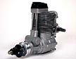

Переводы
| Как делать хорошие снимки моделей самолетов один из MAN авторов и эксперт-фотограф делится своими маленькими секретами, позволяющими улучшить качество снимков авиамоделей. Какие объективы и установки подходят лучше всего. |
|  | Регулировка клапанов 4-тактника -- это просто! 8 простых шагов к высокой производительности. |
| Покраска из баллончика -- это просто! |

|
Все о калильных свечах |